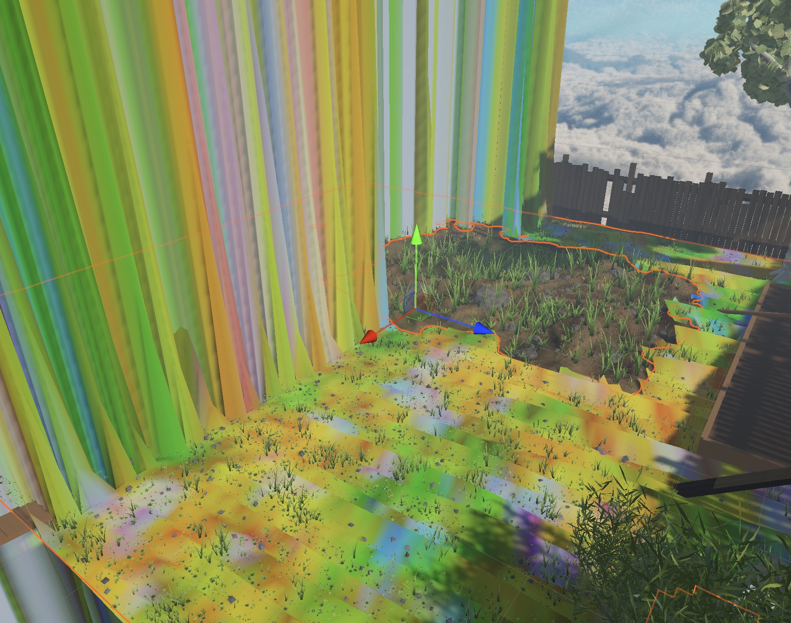

Grasslands: New World


A playable VR game developed with Unity where you explore a house and garden as the size of a bug. You can ride a beetle, free a dog from its chain, play a game of chess against it, and take a microwave to a mythical ants' nest.